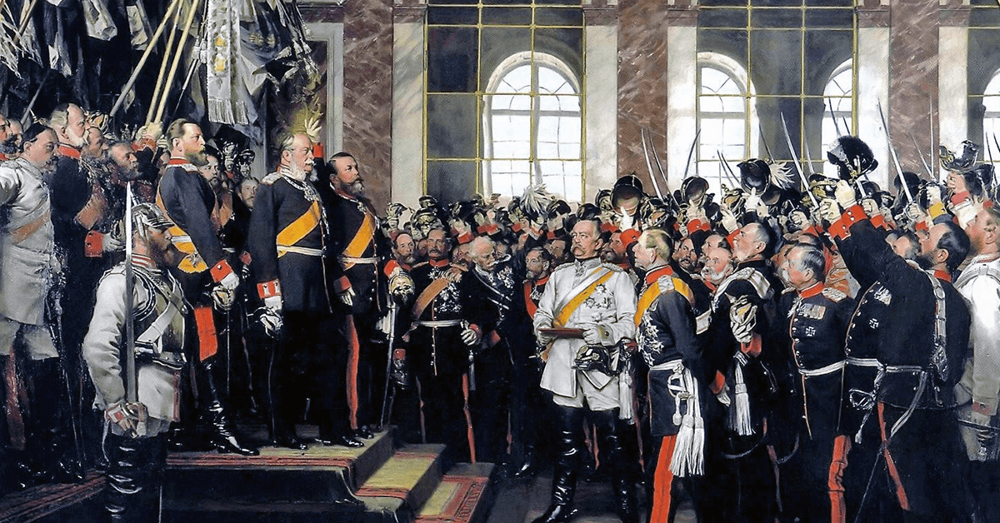
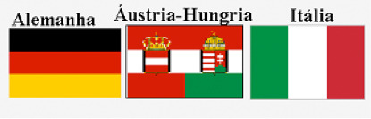
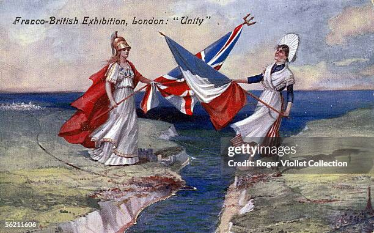
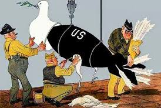
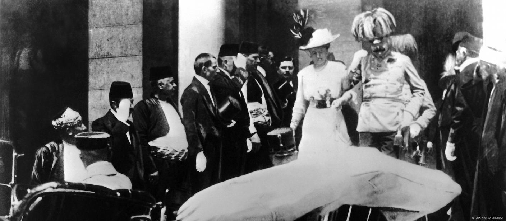
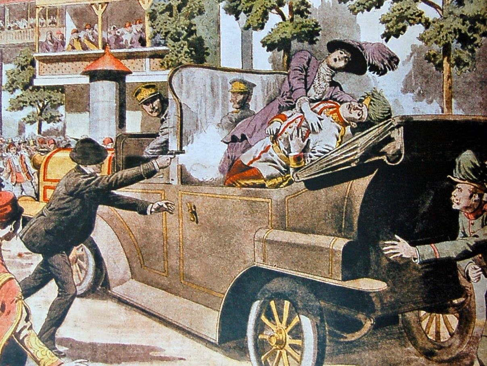

TÓPICOS
O que vai ser abordado:
RESUMO
A Primeira Guerra Mundial foi desencadeada pela corrida armamentista, que ocorreu em meio ao desenvolvimento da indústria militar europeia, à paz armada, ao aumento do nacionalismo e à formação de alianças militares no continente europeu. Isso resultou numa aparente paz na Europa, chamada de "paz armada". Ao contrário do que o termo indica, é caracterizada como um período de intensas tensões e intensificação de rivalidades. O desenvolvimento do nacionalismo alemão e eslavo foi crucial para estas, pois entrelaça outros conflitos e tensões globais ao se engajar na política de alianças, resultando na formação da Tríplice Aliança e da Tríplice Entente.
CONTEXTO
Conflitos entre as potências imperialistas
As tensões imperialistas aumentaram entre as principais nações do mundo no final do século XIX. A hegemonia britânica já estava sendo questionada pelo avanço de Alemanha e Estados Unidos na disputa por áreas de influência e na própria conquista de matérias-primas como ferro e carvão nos continentes disputados. O Império Inglês estava em risco devido ao crescimento industrial dos Estados Unidos no setor siderúrgico e automobilístico, bem como a expansão da produção bélica e marítima germânica. Essa concorrência estava colocando em risco a supremacia econômica e militar britânica sobre o mundo colonial.
Minorias europeias como poloneses, irlandeses, finlandeses, sérvios, húngaros e eslovenos também queriam ser independentes, ao mesmo tempo em que nações coloniais asiáticas e africanas iniciavam movimentos nacionalistas para se libertar.
A derrota francesa na Batalha de Sedan em 1870 durante a Guerra Franco-Prussiana levou à assinatura do Tratado de Frankfurt em 1871. O acordo incluía a garantia da entrega da região da Alsácia-Lorena à Alemanha, bem como o pagamento obrigatório de uma indenização à nação. O evento desencadeou um forte sentimento de revanchismo francês, baseado na perda de território e na consagração do Império Alemão como tal em todo o território francês na Galeria dos Espelhos do Palácio de Versalhes. A conjuntura desencadeou uma nova guerra no continente.
ALIANÇAS
Formação do sistema de alianças e acirramento das tensões
A política externa da Alemanha visava limitar a ação da França implementando uma política de aliança para evitar o avanço militar da França. Em 1873, Otto von Bismarck criou a Liga dos Três Imperadores com a Alemanha, o Império Austro Húngaro e a Rússia. No entanto, a coligação terminou devido a uma disputa entre russos e austríacos sobre o controle da região balcânica e as posições das minorias eslavas. Após essa ruptura, a Alemanha e o Império Austro-Húngaro decidiram manter uma ajuda militar mútua e assinaram um novo acordo em 1879. Esses acordos foram reafirmados no Congresso de Berlim em 1878. Pouco tempo depois, em 1882, a Tríplice Aliança foi firmada novamente com a Itália. Foi uma resposta à invasão da França à Tunísia.
A França começou a deixar de ser isolada no final do século XIX, implementando uma política diplomática que o ajudou a encontrar novos aliados e reduzir as tensões coloniais com a Inglaterra por meio de acordos de partilha afro-asiática. Isso levou à criação da França em 1894 como a Obrigado. Os franceses também fizeram acordos militares com a Rússia para proteger-se das ameaças imperialistas germânicas. O reino da Itália, mesmo aliado à Alemanha, assinou um tratado secreto com a França de 1902 a 1903 com a promessa de conceder mais território. Tratados secretos claramente não eram ferramentas que trabalhavam juntas para manter a paz. Esse seria o ponto de partida para a aproximação da Itália da aliança anglo-francesa.
As disputas entre a Inglaterra e a França em 1904 foram controladas para proteger seus interesses comuns contra o avanço colonial germânico. Logo depois, a Rússia se uniu à Entente Cordiale. Isso criou a Tríplice Entente em 1907 e aumentou as tensões na Europa entre dois blocos de alianças: a Tríplice Entente e a Tríplice Aliança. O avanço militar impressionante dos germânicos levou duas nações rivais a fazer alianças com o objetivo de unir suas forças em um futuro próximo. No entanto, as disputas inacabadas entre o Império Austro-Húngaro e a Itália levaram essa última a mudar seus posicionamentos da Tríplice Aliança para a Tríplice Entente, disputando as regiões irredentas (ainda não resgatadas) de Tirol, Trentino e Ístria. A Itália chegou a assinar acordos de não agressão com a França e a Rússia.

As tensões que levaram à Primeira Guerra Mundial aumentaram como resultado da Questão Marroquina. Os ingleses, franceses e alemães disputam o norte da África devido ao interesse dessas nações pelo Mediterrâneo e pelos mercados locais. O passado conflituoso da França e da Alemanha, bem como o desenvolvimento de uma política de consentimento mútuo entre França e Inglaterra, levou ao conflito. Essa política consistia em que a França reconhecia a presença britânica no Egito enquanto a Inglaterra apoiava a França no Marrocos contra os interesses alemães.
Na Conferência de Algeciras de 1906, foi aprovada a política de portas abertas para franceses e alemães, com vantagens estratégicas para a França, que ajudou o sultão marroquino a combater guerras tribais e rebeliões muçulmanas. Na Conferência de Agadir de 1911, a França cedeu o Congo à Alemanha, o que fez com que a Alemanha deixasse de ter pretensões sobre o Marrocos. O cenário tenso, por outro lado, persistiu.
A Alemanha não ficou satisfeita com o Congo e continuou a se armar para garantir sua expansão futura. Ao mesmo tempo, havia uma corrida armamentista, que alguns analistas políticos chamavam de Paz Armada. Os conflitos no início do século XX foram agravados pela crise balcânica, que resultou no desmembramento do império otomano, que foi dividido por conflitos entre as principais potências europeias.
A Rússia apoiava a bandeira do pan-eslavismo, defendendo a independência das minorias locais. Os interesses germânicos e austro-húngaros, que pretendiam construir a estrada de ferro Berlim-Bagdá para chegar ao Golfo Pérsico, estavam em oposição a esses princípios. Os sérvios, com o apoio da Rússia, defendiam o projeto da Grande Sérvia e almejavam a unificação dos povos eslavos nas áreas balcânicas. Eles também lutaram contra os interesses dos germânicos, austro-húngaros e turcos. Além disso, os sérvios queriam que a Bósnia-Herzegovina tivesse sua independência da Austrália. Em 1908, o Império Austro-Húngaro reconheceu formalmente a anexação da Bósnia Herzegovina, que era anteriormente sua propriedade.
ESTOPIM
Assasinato de Ferdinando: o estopim do conflito
A disputa de territórios em 1912 exaltou as hostilidades. A Bulgária, apoiada pela Áustria, invadiu a Sérvia em 1913, mas perdeu. Ao mesmo tempo, os eslavos da Bósnia Herzegovina, que aproveitaram a situação, se rebelaram com a ajuda da Sérvia.
O arquiduque Francisco Ferdinando, herdeiro do trono austro-húngaro, visitou Sarajevo, a capital da Bósnia, para anunciar a criação de uma monarquia tríplice, a Austro-Húngaro-Eslava, que colocaria Bósnia-Herzegovina no mesmo patamar da Áustria, tentando acalmar as pessoas.
Em Sarajevo, Francisco Ferdinando e sua esposa foram assassinados por Gavrilo Princip, um estudante sérvio e membro da organização terrorista Mão Negra, com o objetivo de impedir esse projeto.
O Império Austro-Húngaro exigiu que a Sérvia combatesse os terroristas e os nacionalistas radicais, e também exigiu que a Sérvia abrisse seus territórios para que a Austrália pudesse investigar. O Império Austro-Húngaro declarou guerra à Sérvia em agosto de 1914 depois de não atender às suas exigências.
Os russos, que eram aliados dos sérvios, reagiram. A Alemanha, a França e a Inglaterra entraram no conflito motivados pelo início das alianças. Assim, a execução do herdeiro austríaco desencadeou a Primeira Guerra Mundial.
Feito por alunos do ensino médio, integrado ao técnico de Desenvolvimento de Sistemas, da Escola SESI de refenrência de Itajaí, Santa Catarina.